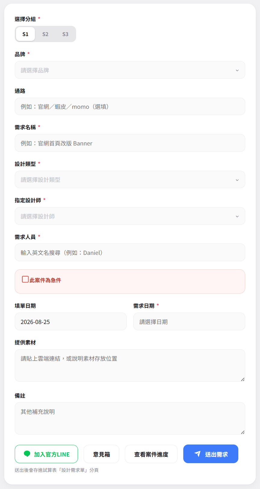

四個頁面，各自對應不同角色。統計面板與設計師工作台需要密碼。
填寫並送出設計需求。選品牌、設計類型、指定設計師與需求日期，可勾選急件。
輸入姓名查詢自己的案件進度，並進行補充內容、改期、複製新增與結案評分。
管理自己的案件狀態、封鎖班表日期、停案與回覆評價。需要密碼進入。
設計費、滿意度、類別占比、品牌排行與月度趨勢。每小時整點自動同步。
從送單到結案的完整動線。
帶星號欄位必填，需求日期從日曆選取。
資料存入試算表「設計需求單」分頁。
在「我的需求查詢」輸入姓名，或用 LINE 通知。
送出評分後，案件狀態轉為「已完成」。
名額與急件的判定邏輯，決定你的需求日期能不能選。
額滿的日期當天會被鎖住，日曆上無法選擇。
被退件的案子會把當天名額空出來給其他需求。
但無法突破設計師手動封鎖的日期。急件需填寫原因。
任何情況都無法選擇，包含急件。
不要直接口頭修改，請重新填寫需求。
送出急件前需勾選確認：因急件插入而延後申請人其他既有需求，或因此衍伸的其他部門問題，設計師一概不負責，相關排程調整由申請人自行承擔。
標示 * 為必填欄位。

填到一半被打斷、資料還沒備齊，不用整份重填。
填單頁面右上角點「暫存需求」。至少要填好「需求人員」姓名（從下拉選單選，不是手打），其他欄位填到哪都可以，沒填完也能存。
下次回到填單頁面，點右上角「繼續填寫」，從下拉選單選出同一個人的姓名，就會自動取回上次暫存的完整內容，包含分組、品牌、設計類型與動態欄位。
同一個姓名再次暫存，會直接覆蓋掉上一次的內容，不會累積多筆。正式送出需求成功後，暫存資料也會自動清除。
在「我的需求查詢」輸入姓名後，每筆案件都有這四個動作。
新增素材連結、補充文案或其他說明，不用重開一張單。
改到另一個可選日期；已封鎖或已額滿的日期一樣不能選。
以既有案件為底新增一筆，只改名稱、日期與數量。
品質、效率、溝通、價格四項評分。任一項 2 顆星以下需說明原因。
正常流程由左至右推進；退件與停案是流程外的兩種結果。
需求已送出，等設計師接手。
設計師已接案並開始製作。
稿件已完成，等需求人員確認。
送出結案評分後自動轉為此狀態。
設計師不受理該需求。退件的案子不占用當天 5 件名額。
案件中途終止，設計師須在工作台填寫停案原因。
設計師專用，需要密碼。改完記得按「一鍵儲存」。
可依排序、狀態篩選與搜尋找案件，直接更新狀態。
點日期即可封鎖，可填不對外顯示的原因。封鎖後填單人員完全選不到，急件也擋。
需填寫停案原因後確認。
針對需求人員的結案評分回覆說明。
上方切換設計師（全部／Nikki／Luna／Yuly／Daniel），所有數字都跟著篩選範圍走。
依目前篩選範圍加總。
來自結案評分，含不滿意原因。
類別占比／品牌排行／月度趨勢／類型分布可切換。
看各品牌的案量分布。
依工時高到低排序。
觀察急件比例是否偏高。
資料來源為 Google 試算表（Daniel／Nikki／Luna／Yuly 分頁），即時讀取，每小時整點自動同步一次。數字有疑問時可按「重新整理」，或直接開啟原始試算表核對。
日常最常用的入口。登記之後，案件有進度就直接通知你，不用登入系統也不用另外裝 App。
在申請單頁面點「加入官方LINE」，掃 QRCODE 或直接點加好友連結。
在聊天室輸入你的姓名即可完成登記，系統會自動辨識你是需求人員或設計師。
隨時輸入「案件」兩個字，就會列出你送過的案件清單與目前狀態。
需求人員登記時輸入的姓名，必須跟填單時的「需求人員」欄位完全相同（例如都是「王小明」，不要一次寫全名一次寫小名）。名字對不起來，系統就找不到你的案件，也不會發通知。
登記完成後，在聊天室直接打字就能觸發，同一個指令依身分顯示的內容不同。
不會。只有你自己的案件有進度更新時才會通知，沒有其他推播或行銷訊息。
可以。需求人員與設計師都能加，登記後系統會自動辨識身分，顯示對應的功能。
可以。登記完成後輸入「案件」，就能看到案件清單與目前狀態，不必再開網頁查詢。
案件狀態變動時，例如被接案、轉為請校稿、退件或停案。校稿通知出現時，記得回系統確認並結案評分。
申請單頁面右下角「加入官方LINE」可掃 QRCODE，或使用下方連結。
使用上有任何問題或想法，可以透過申請單頁面的「意見箱」留言給設計團隊。